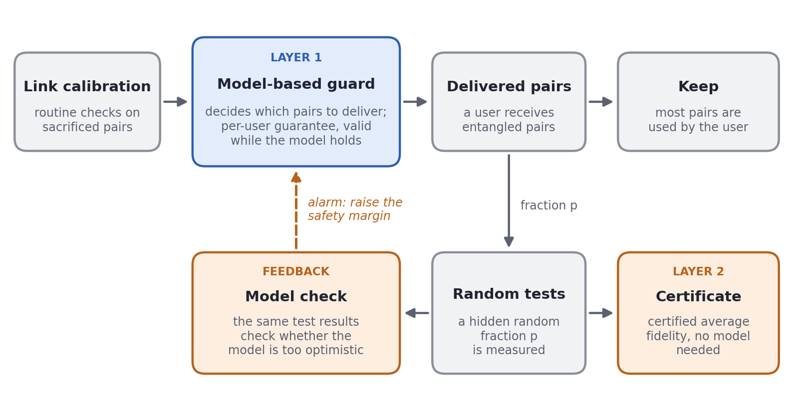

What can a quantum network promise about delivered entanglement?
A two-layer approach to guarding individual deliveries and certifying average fidelity, with open simulations, data checks, and hardware tests.

What can a quantum network promise about an entangled pair once it has delivered that pair to a user? Measuring the pair would consume it, so the network has to work from calibration and a limited number of sacrificial tests.
In an independent study at Carnegie Mellon's Information Networking Institute with Prof. Michael Mattarock, I have been working on a distinction that changed how I think about this problem: a promise about each kept pair needs assumptions about the hardware; a promise about the average quality of kept pairs can be made from random tests without that model.
Two kinds of evidence
The first layer is a model-based guard. It uses calibration data to decide which pairs can be delivered while bounding a user's risk over time, provided the physical model and its declared margins hold. The second layer secretly selects a fraction of pairs for measurement. Those tests give a model-free lower bound on the average fidelity of the pairs the user kept. They also check whether the guard's predictions are too optimistic; after an alarm, the guard raises its safety margin using the test results.
That separation matters. A certificate for an average is not a certificate for every pair. An alarm also cannot undo any low-quality deliveries that occurred before it, and small discrepancies may take many tests to detect.
What the current evidence shows
In pre-registered network simulations on grids up to 30 × 30 nodes, no pair among 4.2 million deliveries after an alarm was below the fidelity threshold. With the safety margin active from the start, the same study found none among 7.8 million deliveries, at a cost to throughput. Across the project's pre-registered primary hypotheses, 74 of 83 passed and nine failed; the failures remain in the public record.
I also re-analyzed public data from three experimental groups and ran two test-or-keep experiments on a single IBM quantum processor. The first processor run's model check missed an injected degradation; a revised check in the second run raised an alarm. These runs test parts of the method, but they are not a demonstration of entanglement distribution across a physical network.
Status and materials
The manuscript is in preparation as of October 2026, and the proofs are undergoing human review. The simulation results depend on the stated noise and model assumptions, while the model-free certificate assumes trusted measurements and fresh, hidden test choices. The code, pre-registrations, results, and evidence ledger are public, with versioned releases on Zenodo.